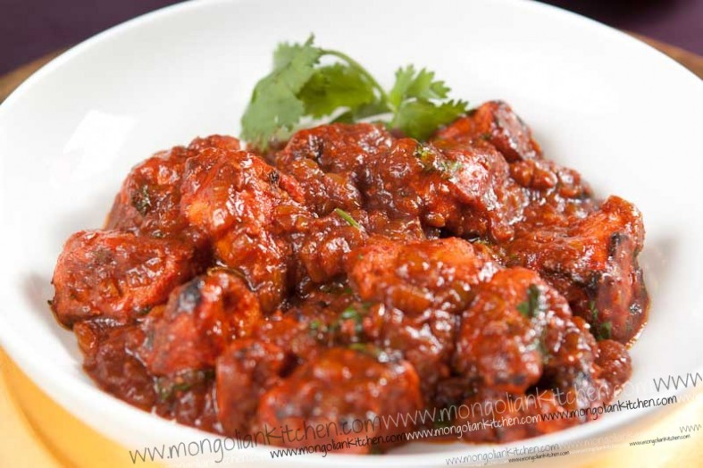

Tandoori chicken is a South Asian dish of chicken marinated in yogurt and spices and roasted in a tandoor, a cylindrical clay oven. The dish is now popular world-wide. The modern form of the dish was popularized by the Moti Mahal restaurant in New Delhi in the late 1940s.
